Легенда о пастухе Калди
Согласно легенде, пастух Калди из провинции Каффа на юге Эфиопии заметил, что после употребления кофейных ягод его козы становились активными и отказывались спать по ночам. О своих наблюдениях Калди доложил аббату местного монастыря, но тот осудил пастуха и бросил ягоды в огонь.
Помещение наполнилось соблазнительным ароматом жареных кофейных зёрен, и аббат решил приготовить из ягод напиток. Выпив его, он ощутил заметный прилив сил, который позволил ему оставаться бодрым во время многочасовой вечерней молитвы. Об открытии аббат рассказал другим монахам монастыря, а те понесли знание дальше.
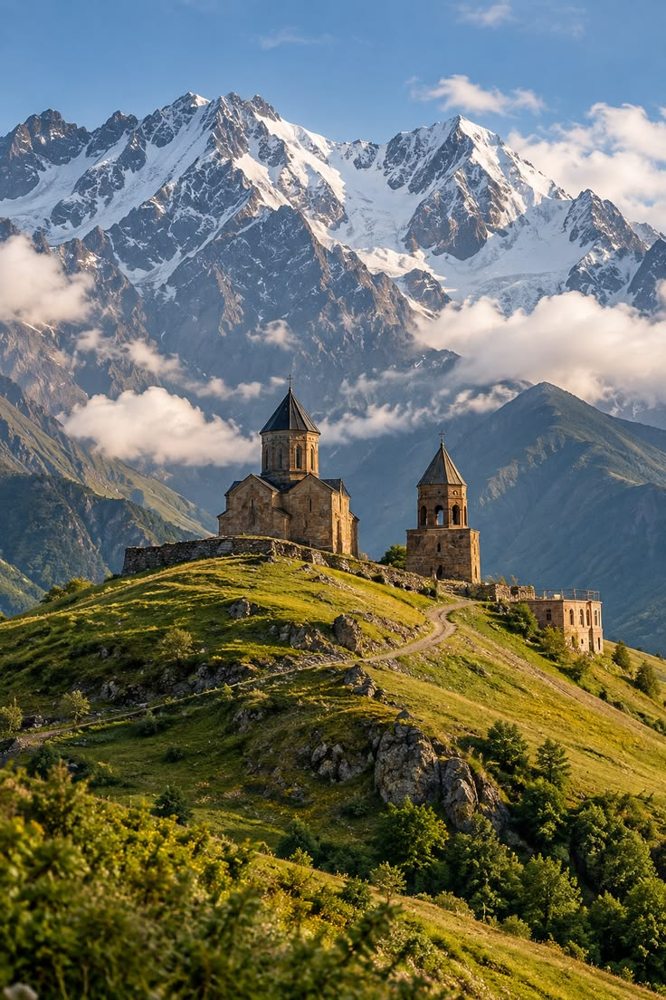
Как кофе покорил мир
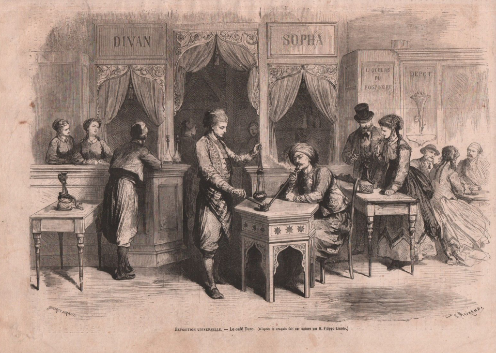
Началось культивирование кофе. Арабы создали напиток «кахва». Мекка и Каир стали центрами кофейной культуры.
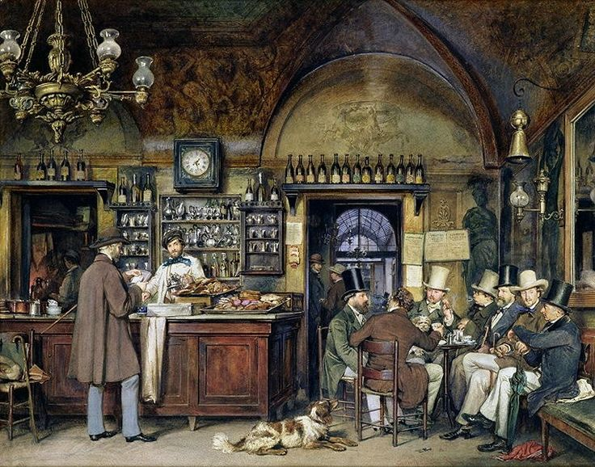
Турецкие купцы завезли кофе в Европу. Первые европейские кофейни открылись в Венеции (1645) и Оксфорде (1650).
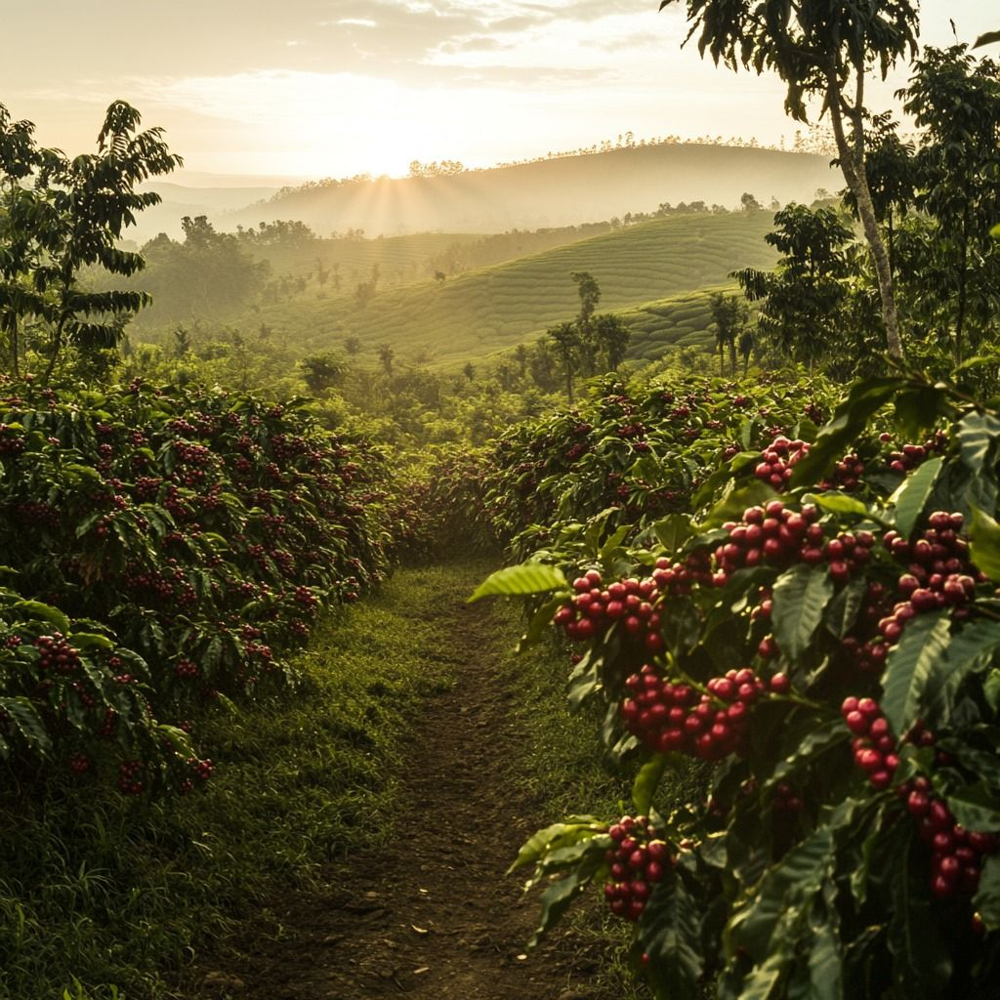
Голландцы завезли кофе на Цейлон, но позже плантации уничтожила болезнь.
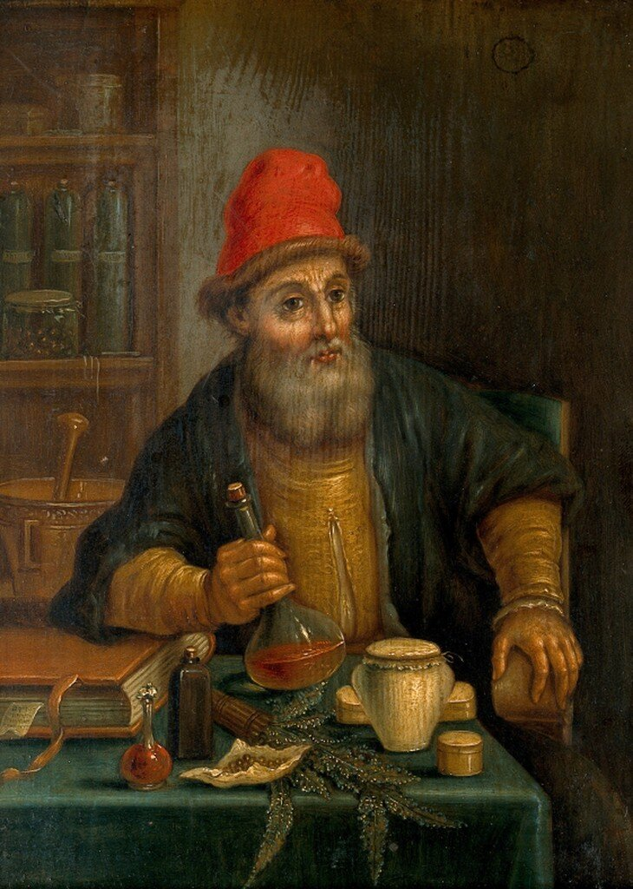
Считается датой появления кофе в России. В этом году придворный лекарь прописал царю Алексею Михайловичу кофе.
После осады Вены турки оставили мешки с кофе. Так появился «кофе по-венски» (с молоком и сахаром).
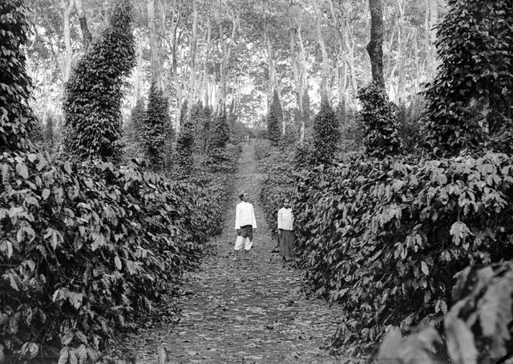
Голландцы тайно вывезли саженцы из Йемена. К XVIII веку Ява стала главным поставщиком кофе в Европу.
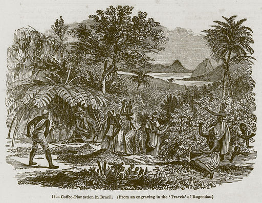
Португалец Франсишку де Мелу Палета вывез зёрна из Французской Гвианы. К 1840-м годам Бразилия стала мировым лидером.
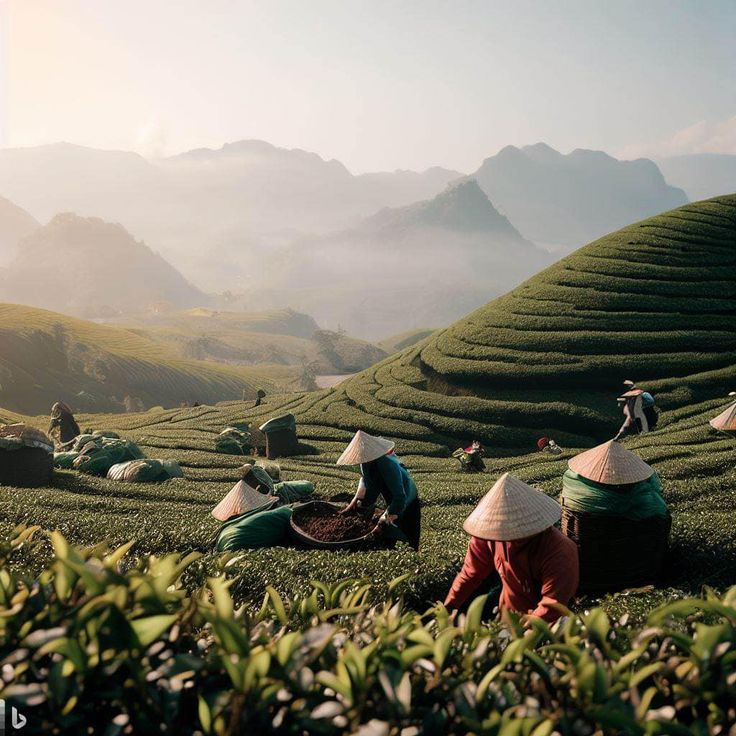
Французы завезли canephora (робусту) во Вьетнам. Сегодня страна — №1 по производству робусты.
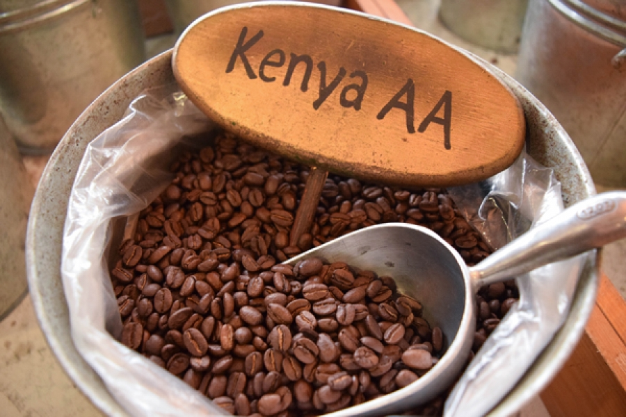
Кофе завезли британские миссионеры. Сейчас кенийская арабика — эталон качества с яркой кислотностью.
Японец Сатори Като изобрёл растворимый кофе. В 1938 году Nestlé выпустила Nescafé.
Интересные факты о кофейных деревьях
Известно более 50 видов кофейных деревьев, но почти весь кофе в мире делают из двух: эфиопской арабики и африканской робусты.
Кофейные деревья в высоту могут достигать 10 метров. Для удобства сбора урожая кроны деревьев формируют не выше 3 метров.
Срок жизни кофейного дерева составляет до 70 лет.
Одно дерево в год даёт менее килограмма кофейных бобов.
Очень восприимчивое к погоде и климату, кофейное дерево может расти только в узкой географической зоне.
Природные плантации составляют не более 20% от общей площади, всё остальное создано руками человека.
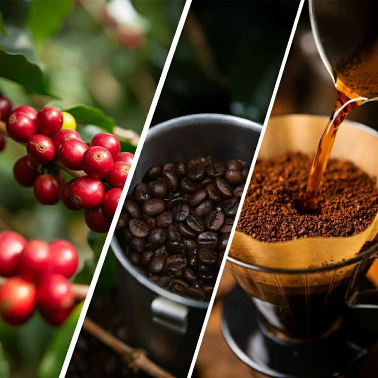
Кофейная карта мира
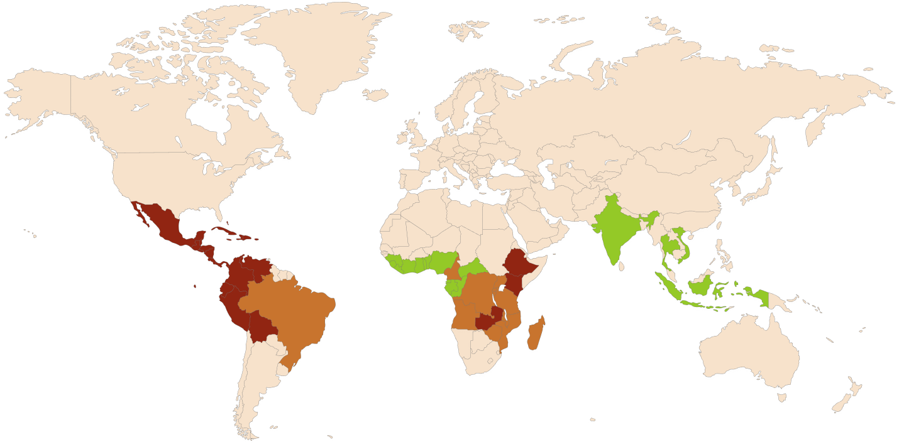